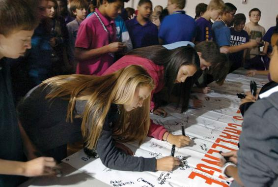

Parents, grandparents, teachers, religious leaders, and children’s television shows from Sesame Street to Thomas and Friends to Spongebob Squarepants teach the importance of being kind to everyone. So how is it possible that by the time students reach middle school or high school, many treat each other cruelly? Bullying is an everyday part of adolescents’ life. More mild forms of bullying include teasing or rudely excluding a classmate from a seat at the cafeteria lunch table. In its more extreme forms, physical threats and cyberbullying—or taunting and humiliating peers online—have led to dire outcomes, with dozens of bullied teens committing suicide in recent decades, including 12-year old Florida middle-school student Rebecca Ann Sedwick who jumped from a concrete silo tower to her death. In 2018, fully 58 percent of teens said they were the target of cyberbullying, which encompassed name-calling, spreading false rumors, sexting, and physical threats (Anderson, 2018). Rates of bullying are even higher for LGBT students (Schneider et al., 2012). A 2015 study found that nearly 60 percent of LGBT students reported feeling physically unsafe at school (Kosciw et al., 2016).
What accounts for the widespread cruelty that teens subject one another to, despite having been taught in elementary school to treat one another with kindness? Peers learn to bully in much the same way that they learn other positive and negative behaviors, through imitation and reinforcement. Imitation refers to the mimicking of the behaviors of others, especially those who hold social power, such as popular students or clique leaders. Reinforcement refers to the process whereby we learn to perform behaviors that are rewarded and avoid behaviors that are punished. Multiple studies show that the most popular students tend to be the perpetrators of abuse, whereas students who are less popular or emotionally insecure tend to be victims (Cook et al., 2010). Students may want to imitate the popular students they look up to and may join in on the bullying out of fear that refusing to do so may render them susceptible to abuse and isolation (Forsberg, Thornberg, and Samuelson, 2014).
A recent study found that middle schools that enlisted influential students in anti-bullying campaigns experienced a 30 percent decrease in reports of student conflict.
Part of the reason bullying tends to spike in early adolescence is that it’s the time when children most strongly identify with their peers (Gavin and Furman, 1989). Between the ages of 10 and 14, children show deficiencies in their ability to resist peer influence (Steinberg and Monahan, 2007). Both this increased identification with their peers and an inability to resist peer influence (perhaps out of fear of being victimized oneself) make adolescence a time when peers are particularly influential on children (Rubin, Bukowski, and Parker, 2006).
Yet just as popular students often are the ones whose bad behavior is modeled by others, their good behavior also can be modeled. For this reason, researchers now suggest that bullying-prevention programs in schools must not merely involve teachers and principals, but also enlist popular students as allies. One recent study of 56 New Jersey middle schools found that when the most influential students—known as “social referents” or “social influencers”—played a leadership role in anti-bullying campaigns, more students in the school reported anti-bullying attitudes, levels of bullying dropped, and more students did things to raise awareness of bullying, like purchasing yellow bracelets to publicly display their opposition to cruel behavior in their schools (Paluck, Shepherd, and Aronow, 2016). As one of the researchers explained, “We think the best way to change social norms is to have these student influencers speak in their own voices. Encouraging their own messages to bubble up from the bottom using a grassroots approach can be very powerful.” This research provides compelling evidence that peers can play an important role in the socialization process by modeling pro-social as well as antisocial behavior.
Sociological research on socialization reveals the complex ways that individuals continue to learn the norms, values, behaviors, and social practices of the particular (and often overlapping) subgroups to which they belong over the life course. As we learned in this chapter’s opening, the lessons and values passed down from generation to generation can shift dramatically over time, reflecting historical shifts in the social and economic opportunities that young people face and the roles that they will someday occupy. Gender and race socialization are two subtypes of socialization that change dramatically over time, as gender and race are socially constructed and their meanings and experiences change across time and place. As we will see in Chapters 10 (Gender Inequality) and 11 (Race, Ethnicity, and Racism), systems of gender and racial inequality have changed dramatically over the past century and will continue to do so into the future. These changes will continue to reshape the ways that gender and racial socialization processes unfold for future cohorts of young people.
CONCEPT CHECKS
How does the media contribute to gender role socialization?
How do parents and other adults reinforce gender roles?
Why are adolescents more likely than young children to bully their peers?
How might school systems effectively combat bullying?